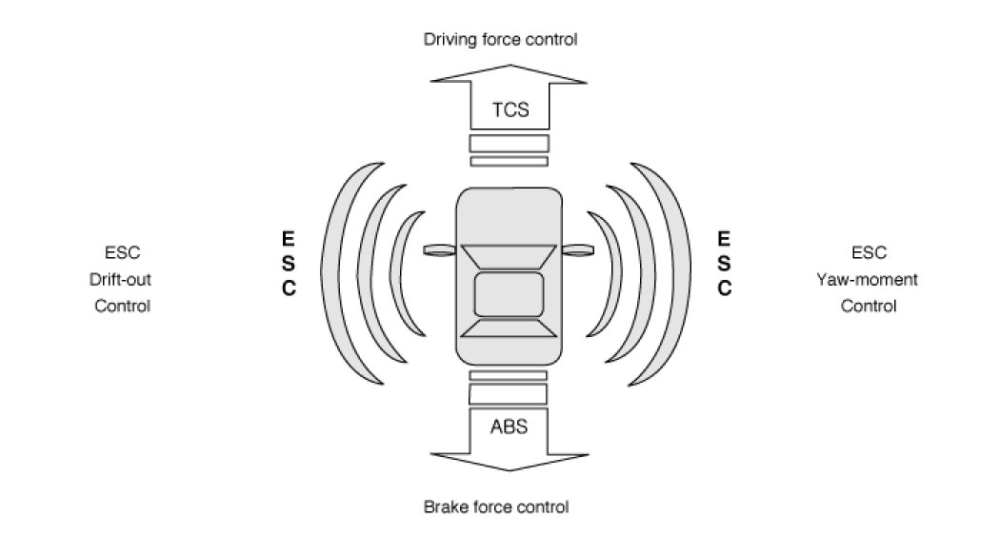
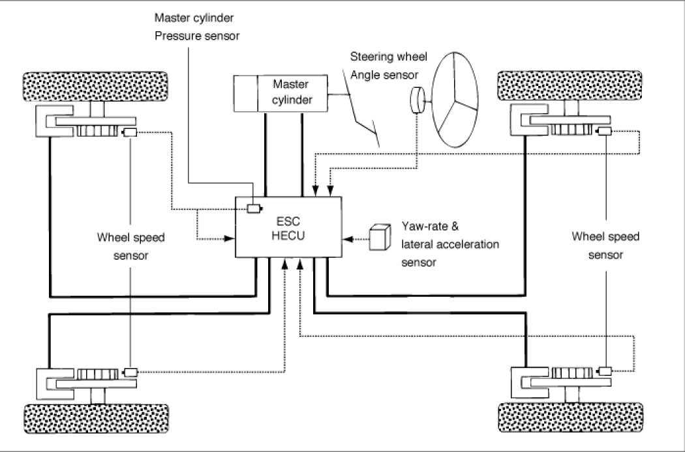
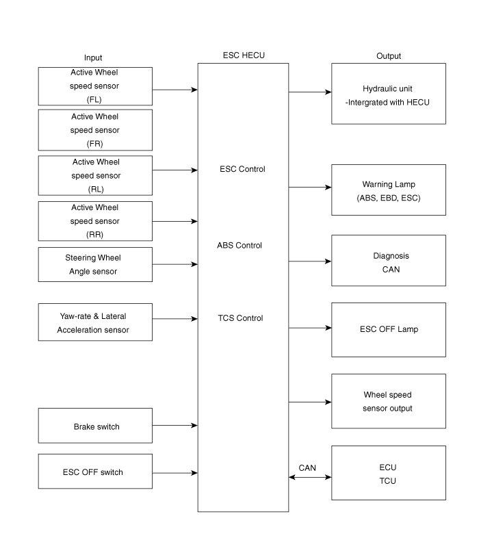
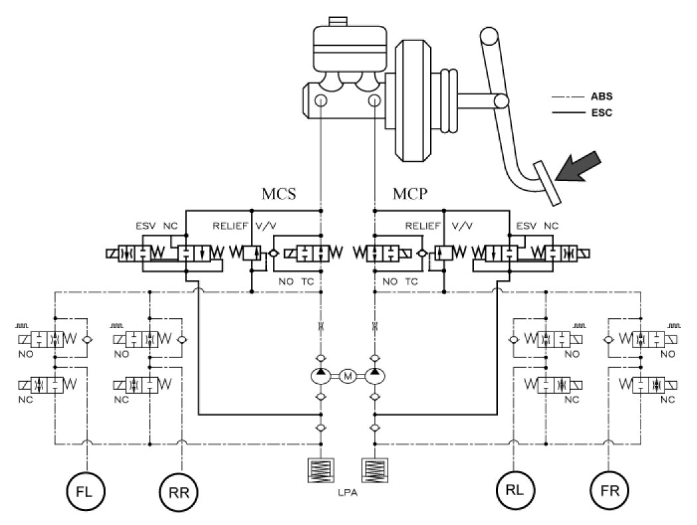
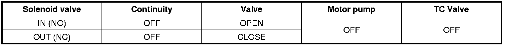
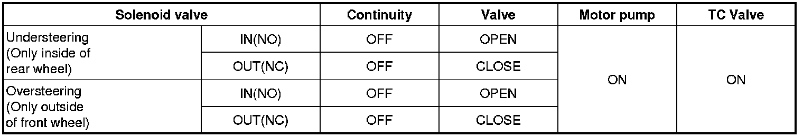
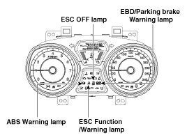
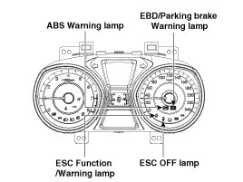

ESC (Electronic Stability Control) System
Description of ESC
Optimum driving safety now has a name : ESC, the Electronic Stability Control.
ESC recognizes critical driving conditions, such as panic reactions in dangerous situations, and stabilizes the vehicle by wheel-individual braking and engine control intervention.
ESC adds a further function known as Active Yaw Control (AYC) to the ABS, TCS, EBD and ESC functions. Whereas the ABS/TCS function controls wheel slip during braking and acceleration and, thus, mainly intervenes in the longitudinal dynamics of the vehicle, active yaw control stabilizes the vehicle about its vertical axis.
This is achieved by wheel individual brake intervention and adaptation of the momentary engine torque with no need for any action to be taken by the driver.
ESC essentially consists of three assemblies : the sensors, the electronic control unit and the actuators.
The stability control feature works under all driving and operating conditions. Under certain driving conditions, the ABS/TCS function can be activated simultaneously with the ESC function in response to a command by the driver.
In the event of a failure of the stability control function, the basic safety function, ABS, is still maintained.

Description of ESC Control
ESC system includes ABS/EBD, TCS and AYC function.
ABS/EBD function : The ECU changes the active sensor signal (current shift) coming from the four wheel sensors to the square wave. By using the input of above signals, the ECU calculates the vehicle speed and the acceleration & deceleration of the four wheels. And, the ECU judges whether the ABS/EBD should be actuated or not.
TCS function prevents the wheel slip of drive direction by adding the brake pressure and engine torque reduction via CAN communication. TCS function uses the wheel speed sensor signal to determine the wheel slip as far as ABS function.
AYC function prevents unstable maneuver of the vehicle. To determine the vehicle maneuver, AYC function uses the maneuver sensor signals(Yaw Rate Sensor, Lateral Acceleration Sensor, Steering Wheel Angle Sensor).
If vehicle maneuver is unstable (Over Steer or Under Steer), AYC function applies the brake pressure on certain wheel, and send engine torque reduction signal by CAN.
After the key-on, the ECU continually diagnoses the system failure. (self-diagnosis)If the system failure is detected, the ECU informs driver of the system failure through the BRAKE/ABS/ESC warning lamp. (fail-safe warning)

Input and Output Diagram

ESC Operation Mode
ESC Hydraulic System Diagram

1. ESC Non-operation : Normal braking.

2. ESC operation

[Standard Type]

[Super Vision Type]

ABS Warning Lamp module
The active ABS warning lamp module indicates the self-test and failure status of the ABS. The ABS warning lamp shall be on:
- During the initialization phase after IGN ON. (continuously 3 seconds).
- In the event of inhibition of ABS functions by failure.
- During diagnostic mode.
- When the ECU Connector is separated from ECU.
- Cluster lamp is ON when communication is impossible with CAN module.
EBD/Parking Brake Warning Lamp Module
The active EBD warning lamp module indicates the self-test and failure status of the EBD. However, in case the Parking Brake Switch is turned on, the EBD warning lamp is always turned on regardless of EBD functions. The EBD warning lamp shall be on:
- During the initialization phase after IGN ON. (continuously 3 seconds).
- When the Parking Brake Switch is ON or brake fluid level is low.
- When the EBD function is out of order.
- During diagnostic mode.
- When the ECU Connector is separated from ECU.
- Cluster lamp is ON when communication is impossible with CAN module.
ESC function/warning lamp (ESC system)
The ESC function/warning lamp indicates the self-test and failure status of the ESC.
The ESC function/warning lamp is turned on under the following conditions :
- During the initialization phase after IGN ON. (continuously 3 seconds).
- When the ESC function is inhibited by system failure.
- When the ESC control is operating. (Blinking - 2Hz)
- During diagnostic mode.(Except standard mode)
- Cluster lamp is ON when communication is impossible with CAN module.
ESC Off Lamp (ESC system)
The ESC Off lamp indicates the self-test and operating status of the ESC.
The ESC Off lamp operates under the following conditions :
- During the initialization mode after IGN ON. (continuously 3 seconds).
- ESC Off lamp is On when driver input the ESC Off switch.
ESC On/Off Switch (ESC system)
The ESC On/Off Switch shall be used to toggle the ESC function between On/Off states based upon driver input.
The On/Off switch shall be a normally open, momentary contact switch. Closed contacts switch the circuit to ignition.
Initial status of the ESC function is on and switch toggle the state.